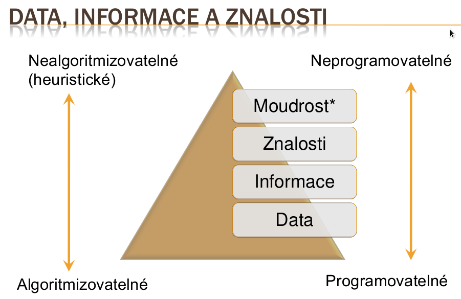

Etymologie: z řeckého ontos (bytí, to co jest) a logos (slovo, řeč, význam) * Původně podoblast filosofie, která se zabývá bytím a podmínkami existence věcí okolo nás * Oblast zájmu - co existuje nebo by mohlo existovat v našem světě, jsoucno a jeho podstata
„Předmětem ontologie je studium kategorií věcí, které existují nebo mohou existovat v určité doméně. Výsledek tohoto studia, nazývaný ontologie, je katalog věcí, jejichž existenci předpokládáme v dané doméně D, z perspektivy osoby používající jazyk L, aby mluvila o D. “
„Ontologie je explicitní specifikace konceptualizace.“
Řeší, jak znalosti * Získávat * Sdílet * Uchovávat (reprezentovat, modelovat) * Zpracovávat a používat * Předávat * Vytvářet
zkušenostech
Výchozí typ třídy
V přirozeném jazyce se obvykle jedná o
podstatné jména * Modeluje se jako neúplná třída – pouze omezení v bloku necessary
Def. třída vytváří kategorie, do nichž se po
aplikaci klasifikátoru (odvození) odvodí třídy odpovídající definici
pomocí omezení v bloku necessary
Tři možné přístupy * Vymezení popsáním (částečné) * Vymezení definováním (úplné) * Vymezení výčtem (úplné)
Důležité je mít jasno v otázkách: * Jaký je význam třídy? * Kteří jedinci do třídy patří a kteří ne? * Jak posoudit, zda jedinec do třídy patří?
Vymezení určuje význam třídy v kontextu jiných tříd
zařazení fungovalo správně
Jazyk OWL je založený na deskripční logice
daná kriteria * Uvažování s použitím klasifikátoru – nástroje pro odvozování implicitních souvislostí v rámci ontologie
Jednoznačné zařazení jedince do třídy
Příklad: „Každá sýrová pizza má sýrovou přísadu“ „CheesePizza hasTopping some CheeseTopping“
Definice třídy Jestliže je něco sýrová pizza, pak patří do třídy Pizza a zároveň patří do třídy všech jedinců, kteří obsahují sýrovou přísadu <= Jestliže je něco Pizza a obsahuje sýrovou přísadu, pak patří do třídy sýrová pizza
Tzn. třída je vymezená popsáním + zavádí se ekvivalence „Sýrová pizza je totéž, co pizza se sýrovou přísadou“
Je uveden výčet jedinců, kteří do třídy patří * Tím je třída vymezena jednoznačně, není sporu co do třídy patří a co ne
Alespoň jedna hodnota vlastnosti musí být uvedeného typu
Ze splnění omezení allValuesFrom neplyne splnění omezení someValuesFrom Příklad: vegetariánská pizza je taková pizza, že všechny její přísady jsou zeleninové nebo sýrové
Nevíme, zda nějakou přísadu vůbec má
Strojové zpracování znalostí bez asistence člověka (sémantický web)
Zvyšování kvality ontologie: * Smysluplnost – všechny pojmenované třídy mohou mít instance * Korektnost – zachycení znalostí doménovýchexpertů * Minimální redundance – žádná neúmyslná synonyma * Bohatá axiomatizace – detailní popis tříd
Klasifikátor provádí: * Kontrolu konzistentnosti (zda si jednotlivé části ontologie logicky vzájemně neodporují) * Klasifikaci tříd (kontrola příslušnosti tříd, tj. isA relací – tvoří hierarchickou strukturu ontologie) * Klasifikace jedinců
Nějaké tvrzení o světě může být pravdivé, nepravdivé nebo nerozhodnutelné. V uzavřeném světě nepředpokládáme, že budo zjišťovány nové skutečností, které by mohly změnit náš aktuální pohled na svět.
V otevřeném světě předpokládáme, že časem bude možné přidat další informace k aktuálnímu stavu zkoumání dané domény Předpoklad otevřeného světa: * „Jestliže tvrzení X (obžalovaný je nevinen) není pravdivé, pak tvrzení X může být jak nepravdivé (tudíž obžalovaný je vinen) tak nerozhodnutelné.“ * „Jestliže se neprokáže nevina, pak nelze usuzovat, že obžalovaný je vinen.“
Opatrný přístup * „Jestliže je nějaké tvrzení nerozhodnutelné, a později získám znalosti k určení jeho pravdivosti, není nutné přehodnotit předchozí závěry.“
Databáze je příkladem uzavřeného světa: * Hledáme osobu X v živnostenském rejstříku, která provozuje činnost Y Možný výsledek: „Osoba nenalezena.“ * V principu OWA bychom řekli, že daná osoba není živnostník * To, co není v databázi, neexistuje * Při použití klasifikátoru bychom jen na základě neobdržení dat nemohli konstatovat, že živnostník neexistuje * Klasifikátor může rozhodnout, když má explicitně vyjádřené informace